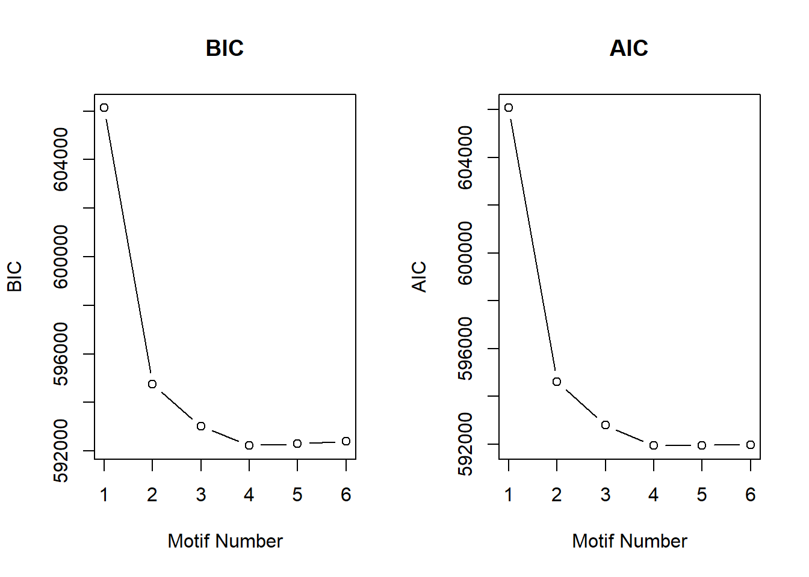

Last updated: 2025-05-20
Checks: 7 0
Knit directory: ATAC_learning/
This reproducible R Markdown analysis was created with workflowr (version 1.7.1). The Checks tab describes the reproducibility checks that were applied when the results were created. The Past versions tab lists the development history.
Great! Since the R Markdown file has been committed to the Git repository, you know the exact version of the code that produced these results.
Great job! The global environment was empty. Objects defined in the global environment can affect the analysis in your R Markdown file in unknown ways. For reproduciblity it’s best to always run the code in an empty environment.
The command set.seed(20231016) was run prior to running
the code in the R Markdown file. Setting a seed ensures that any results
that rely on randomness, e.g. subsampling or permutations, are
reproducible.
Great job! Recording the operating system, R version, and package versions is critical for reproducibility.
Nice! There were no cached chunks for this analysis, so you can be confident that you successfully produced the results during this run.
Great job! Using relative paths to the files within your workflowr project makes it easier to run your code on other machines.
Great! You are using Git for version control. Tracking code development and connecting the code version to the results is critical for reproducibility.
The results in this page were generated with repository version c6d4fbd. See the Past versions tab to see a history of the changes made to the R Markdown and HTML files.
Note that you need to be careful to ensure that all relevant files for
the analysis have been committed to Git prior to generating the results
(you can use wflow_publish or
wflow_git_commit). workflowr only checks the R Markdown
file, but you know if there are other scripts or data files that it
depends on. Below is the status of the Git repository when the results
were generated:
Ignored files:
Ignored: .RData
Ignored: .Rhistory
Ignored: .Rproj.user/
Ignored: analysis/H3K27ac_integration_noM.Rmd
Ignored: data/ACresp_SNP_table.csv
Ignored: data/ARR_SNP_table.csv
Ignored: data/All_merged_peaks.tsv
Ignored: data/CAD_gwas_dataframe.RDS
Ignored: data/CTX_SNP_table.csv
Ignored: data/Collapsed_expressed_NG_peak_table.csv
Ignored: data/DEG_toplist_sep_n45.RDS
Ignored: data/FRiP_first_run.txt
Ignored: data/Final_four_data/
Ignored: data/Frip_1_reads.csv
Ignored: data/Frip_2_reads.csv
Ignored: data/Frip_3_reads.csv
Ignored: data/Frip_4_reads.csv
Ignored: data/Frip_5_reads.csv
Ignored: data/Frip_6_reads.csv
Ignored: data/GO_KEGG_analysis/
Ignored: data/HF_SNP_table.csv
Ignored: data/Ind1_75DA24h_dedup_peaks.csv
Ignored: data/Ind1_TSS_peaks.RDS
Ignored: data/Ind1_firstfragment_files.txt
Ignored: data/Ind1_fragment_files.txt
Ignored: data/Ind1_peaks_list.RDS
Ignored: data/Ind1_summary.txt
Ignored: data/Ind2_TSS_peaks.RDS
Ignored: data/Ind2_fragment_files.txt
Ignored: data/Ind2_peaks_list.RDS
Ignored: data/Ind2_summary.txt
Ignored: data/Ind3_TSS_peaks.RDS
Ignored: data/Ind3_fragment_files.txt
Ignored: data/Ind3_peaks_list.RDS
Ignored: data/Ind3_summary.txt
Ignored: data/Ind4_79B24h_dedup_peaks.csv
Ignored: data/Ind4_TSS_peaks.RDS
Ignored: data/Ind4_V24h_fraglength.txt
Ignored: data/Ind4_fragment_files.txt
Ignored: data/Ind4_fragment_filesN.txt
Ignored: data/Ind4_peaks_list.RDS
Ignored: data/Ind4_summary.txt
Ignored: data/Ind5_TSS_peaks.RDS
Ignored: data/Ind5_fragment_files.txt
Ignored: data/Ind5_fragment_filesN.txt
Ignored: data/Ind5_peaks_list.RDS
Ignored: data/Ind5_summary.txt
Ignored: data/Ind6_TSS_peaks.RDS
Ignored: data/Ind6_fragment_files.txt
Ignored: data/Ind6_peaks_list.RDS
Ignored: data/Ind6_summary.txt
Ignored: data/Knowles_4.RDS
Ignored: data/Knowles_5.RDS
Ignored: data/Knowles_6.RDS
Ignored: data/LiSiLTDNRe_TE_df.RDS
Ignored: data/MI_gwas.RDS
Ignored: data/SNP_GWAS_PEAK_MRC_id
Ignored: data/SNP_GWAS_PEAK_MRC_id.csv
Ignored: data/SNP_gene_cat_list.tsv
Ignored: data/SNP_supp_schneider.RDS
Ignored: data/TE_info/
Ignored: data/TFmapnames.RDS
Ignored: data/all_TSSE_scores.RDS
Ignored: data/all_four_filtered_counts.txt
Ignored: data/aln_run1_results.txt
Ignored: data/anno_ind1_DA24h.RDS
Ignored: data/anno_ind4_V24h.RDS
Ignored: data/annotated_gwas_SNPS.csv
Ignored: data/background_n45_he_peaks.RDS
Ignored: data/cardiac_muscle_FRIP.csv
Ignored: data/cardiomyocyte_FRIP.csv
Ignored: data/col_ng_peak.csv
Ignored: data/cormotif_full_4_run.RDS
Ignored: data/cormotif_full_4_run_he.RDS
Ignored: data/cormotif_full_6_run.RDS
Ignored: data/cormotif_full_6_run_he.RDS
Ignored: data/cormotif_probability_45_list.csv
Ignored: data/cormotif_probability_45_list_he.csv
Ignored: data/cormotif_probability_all_6_list.csv
Ignored: data/cormotif_probability_all_6_list_he.csv
Ignored: data/datasave.RDS
Ignored: data/embryo_heart_FRIP.csv
Ignored: data/enhancer_list_ENCFF126UHK.bed
Ignored: data/enhancerdata/
Ignored: data/filt_Peaks_efit2.RDS
Ignored: data/filt_Peaks_efit2_bl.RDS
Ignored: data/filt_Peaks_efit2_n45.RDS
Ignored: data/first_Peaksummarycounts.csv
Ignored: data/first_run_frag_counts.txt
Ignored: data/full_bedfiles/
Ignored: data/gene_ref.csv
Ignored: data/gwas_1_dataframe.RDS
Ignored: data/gwas_2_dataframe.RDS
Ignored: data/gwas_3_dataframe.RDS
Ignored: data/gwas_4_dataframe.RDS
Ignored: data/gwas_5_dataframe.RDS
Ignored: data/high_conf_peak_counts.csv
Ignored: data/high_conf_peak_counts.txt
Ignored: data/high_conf_peaks_bl_counts.txt
Ignored: data/high_conf_peaks_counts.txt
Ignored: data/hits_files/
Ignored: data/hyper_files/
Ignored: data/hypo_files/
Ignored: data/ind1_DA24hpeaks.RDS
Ignored: data/ind1_TSSE.RDS
Ignored: data/ind2_TSSE.RDS
Ignored: data/ind3_TSSE.RDS
Ignored: data/ind4_TSSE.RDS
Ignored: data/ind4_V24hpeaks.RDS
Ignored: data/ind5_TSSE.RDS
Ignored: data/ind6_TSSE.RDS
Ignored: data/initial_complete_stats_run1.txt
Ignored: data/left_ventricle_FRIP.csv
Ignored: data/median_24_lfc.RDS
Ignored: data/median_3_lfc.RDS
Ignored: data/mergedPeads.gff
Ignored: data/mergedPeaks.gff
Ignored: data/motif_list_full
Ignored: data/motif_list_n45
Ignored: data/motif_list_n45.RDS
Ignored: data/multiqc_fastqc_run1.txt
Ignored: data/multiqc_fastqc_run2.txt
Ignored: data/multiqc_genestat_run1.txt
Ignored: data/multiqc_genestat_run2.txt
Ignored: data/my_hc_filt_counts.RDS
Ignored: data/my_hc_filt_counts_n45.RDS
Ignored: data/n45_bedfiles/
Ignored: data/n45_files
Ignored: data/other_papers/
Ignored: data/peakAnnoList_1.RDS
Ignored: data/peakAnnoList_2.RDS
Ignored: data/peakAnnoList_24_full.RDS
Ignored: data/peakAnnoList_24_n45.RDS
Ignored: data/peakAnnoList_3.RDS
Ignored: data/peakAnnoList_3_full.RDS
Ignored: data/peakAnnoList_3_n45.RDS
Ignored: data/peakAnnoList_4.RDS
Ignored: data/peakAnnoList_5.RDS
Ignored: data/peakAnnoList_6.RDS
Ignored: data/peakAnnoList_Eight.RDS
Ignored: data/peakAnnoList_full_motif.RDS
Ignored: data/peakAnnoList_n45_motif.RDS
Ignored: data/siglist_full.RDS
Ignored: data/siglist_n45.RDS
Ignored: data/summarized_peaks_dataframe.txt
Ignored: data/summary_peakIDandReHeat.csv
Ignored: data/test.list.RDS
Ignored: data/testnames.txt
Ignored: data/toplist_6.RDS
Ignored: data/toplist_full.RDS
Ignored: data/toplist_full_DAR_6.RDS
Ignored: data/toplist_n45.RDS
Ignored: data/trimmed_seq_length.csv
Ignored: data/unclassified_full_set_peaks.RDS
Ignored: data/unclassified_n45_set_peaks.RDS
Ignored: data/xstreme/
Untracked files:
Untracked: RNA_seq_integration.Rmd
Untracked: Rplot.pdf
Untracked: analysis/.gitignore
Untracked: analysis/Diagnosis-tmm.Rmd
Untracked: analysis/Expressed_RNA_associations.Rmd
Untracked: analysis/LFC_corr.Rmd
Untracked: analysis/SVA.Rmd
Untracked: analysis/Tan2020.Rmd
Untracked: analysis/making_master_peaks_list.Rmd
Untracked: analysis/my_hc_filt_counts.csv
Untracked: code/IGV_snapshot_code.R
Untracked: code/LongDARlist.R
Untracked: code/just_for_Fun.R
Untracked: my_plot.pdf
Untracked: my_plot.png
Untracked: output/cormotif_probability_45_list.csv
Untracked: output/cormotif_probability_all_6_list.csv
Untracked: setup.RData
Unstaged changes:
Modified: ATAC_learning.Rproj
Modified: analysis/AF_HF_SNPs.Rmd
Modified: analysis/Cardiotox_SNPs.Rmd
Modified: analysis/Cormotif_analysis.Rmd
Modified: analysis/DEG_analysis.Rmd
Modified: analysis/H3K27ac_initial_QC.Rmd
Modified: analysis/Jaspar_motif.Rmd
Modified: analysis/Jaspar_motif_ff.Rmd
Modified: analysis/TE_analysis_norm.Rmd
Modified: analysis/final_four_analysis.Rmd
Note that any generated files, e.g. HTML, png, CSS, etc., are not included in this status report because it is ok for generated content to have uncommitted changes.
These are the previous versions of the repository in which changes were
made to the R Markdown (analysis/H3K27ac_cormotif.Rmd) and
HTML (docs/H3K27ac_cormotif.html) files. If you’ve
configured a remote Git repository (see ?wflow_git_remote),
click on the hyperlinks in the table below to view the files as they
were in that past version.
| File | Version | Author | Date | Message |
|---|---|---|---|---|
| Rmd | c6d4fbd | reneeisnowhere | 2025-05-20 | adjust graph axis |
| html | 7b7d35e | reneeisnowhere | 2025-05-12 | Build site. |
| Rmd | 4544c79 | reneeisnowhere | 2025-05-12 | typo fix |
| html | caf2829 | reneeisnowhere | 2025-05-12 | Build site. |
| Rmd | e16f749 | reneeisnowhere | 2025-05-12 | removing chrM from analysis |
library(tidyverse)
library(kableExtra)
library(broom)
library(RColorBrewer)
library(ChIPseeker)
library("TxDb.Hsapiens.UCSC.hg38.knownGene")
library(rtracklayer)
library(edgeR)
library(limma)
library(readr)
library(BiocGenerics)
library(gridExtra)
library(VennDiagram)
library(scales)
library(BiocParallel)
library(ggpubr)
library(devtools)
library(eulerr)
library(genomation)
library(ggsignif)
library(plyranges)
library(ggrepel)
library(ComplexHeatmap)
library(smplot2)
library(stringr)
library(cowplot)Filtered out matrix from the previous QC page.
final_23_mat <- readRDS("data/Final_four_data/re_analysis/H3K27ac_final_23_raw_counts.RDS")Filtering check
lcpm_f <- cpm(final_23_mat, log= TRUE)
### for determining the basic cutoffs
filt_final_raw_counts <- final_23_mat[rowMeans(lcpm_f)> 0,]
dim(filt_final_raw_counts)[1] 20137 23## Fit limma model using code as it is found in the original cormotif code. It has
## only been modified to add names to the matrix of t values, as well as the
## limma fits
limmafit.default <- function(exprs,groupid,compid) {
limmafits <- list()
compnum <- nrow(compid)
genenum <- nrow(exprs)
limmat <- matrix(0,genenum,compnum)
limmas2 <- rep(0,compnum)
limmadf <- rep(0,compnum)
limmav0 <- rep(0,compnum)
limmag1num <- rep(0,compnum)
limmag2num <- rep(0,compnum)
rownames(limmat) <- rownames(exprs)
colnames(limmat) <- rownames(compid)
names(limmas2) <- rownames(compid)
names(limmadf) <- rownames(compid)
names(limmav0) <- rownames(compid)
names(limmag1num) <- rownames(compid)
names(limmag2num) <- rownames(compid)
for(i in 1:compnum) {
selid1 <- which(groupid == compid[i,1])
selid2 <- which(groupid == compid[i,2])
eset <- new("ExpressionSet", exprs=cbind(exprs[,selid1],exprs[,selid2]))
g1num <- length(selid1)
g2num <- length(selid2)
designmat <- cbind(base=rep(1,(g1num+g2num)), delta=c(rep(0,g1num),rep(1,g2num)))
fit <- lmFit(eset,designmat)
fit <- eBayes(fit)
limmat[,i] <- fit$t[,2]
limmas2[i] <- fit$s2.prior
limmadf[i] <- fit$df.prior
limmav0[i] <- fit$var.prior[2]
limmag1num[i] <- g1num
limmag2num[i] <- g2num
limmafits[[i]] <- fit
# log odds
# w<-sqrt(1+fit$var.prior[2]/(1/g1num+1/g2num))
# log(0.99)+dt(fit$t[1,2],g1num+g2num-2+fit$df.prior,log=TRUE)-log(0.01)-dt(fit$t[1,2]/w, g1num+g2num-2+fit$df.prior, log=TRUE)+log(w)
}
names(limmafits) <- rownames(compid)
limmacompnum<-nrow(compid)
result<-list(t = limmat,
v0 = limmav0,
df0 = limmadf,
s20 = limmas2,
g1num = limmag1num,
g2num = limmag2num,
compnum = limmacompnum,
fits = limmafits)
}
limmafit.counts <-
function (exprs, groupid, compid, norm.factor.method = "TMM", voom.normalize.method = "none")
{
limmafits <- list()
compnum <- nrow(compid)
genenum <- nrow(exprs)
limmat <- matrix(NA,genenum,compnum)
limmas2 <- rep(0,compnum)
limmadf <- rep(0,compnum)
limmav0 <- rep(0,compnum)
limmag1num <- rep(0,compnum)
limmag2num <- rep(0,compnum)
rownames(limmat) <- rownames(exprs)
colnames(limmat) <- rownames(compid)
names(limmas2) <- rownames(compid)
names(limmadf) <- rownames(compid)
names(limmav0) <- rownames(compid)
names(limmag1num) <- rownames(compid)
names(limmag2num) <- rownames(compid)
for (i in 1:compnum) {
message(paste("Running limma for comparision",i,"/",compnum))
selid1 <- which(groupid == compid[i, 1])
selid2 <- which(groupid == compid[i, 2])
# make a new count data frame
counts <- cbind(exprs[, selid1], exprs[, selid2])
# remove NAs
not.nas <- which(apply(counts, 1, function(x) !any(is.na(x))) == TRUE)
# runn voom/limma
d <- DGEList(counts[not.nas,])
d <- calcNormFactors(d, method = norm.factor.method)
g1num <- length(selid1)
g2num <- length(selid2)
designmat <- cbind(base = rep(1, (g1num + g2num)), delta = c(rep(0,
g1num), rep(1, g2num)))
y <- voom(d, designmat, normalize.method = voom.normalize.method)
fit <- lmFit(y, designmat)
fit <- eBayes(fit)
limmafits[[i]] <- fit
limmat[not.nas, i] <- fit$t[, 2]
limmas2[i] <- fit$s2.prior
limmadf[i] <- fit$df.prior
limmav0[i] <- fit$var.prior[2]
limmag1num[i] <- g1num
limmag2num[i] <- g2num
}
limmacompnum <- nrow(compid)
names(limmafits) <- rownames(compid)
result <- list(t = limmat,
v0 = limmav0,
df0 = limmadf,
s20 = limmas2,
g1num = limmag1num,
g2num = limmag2num,
compnum = limmacompnum,
fits = limmafits)
}
limmafit.list <-
function (fitlist, cmp.idx=2)
{
compnum <- length(fitlist)
genes <- c()
for (i in 1:compnum) genes <- unique(c(genes, rownames(fitlist[[i]])))
genenum <- length(genes)
limmat <- matrix(NA,genenum,compnum)
limmas2 <- rep(0,compnum)
limmadf <- rep(0,compnum)
limmav0 <- rep(0,compnum)
limmag1num <- rep(0,compnum)
limmag2num <- rep(0,compnum)
rownames(limmat) <- genes
colnames(limmat) <- names(fitlist)
names(limmas2) <- names(fitlist)
names(limmadf) <- names(fitlist)
names(limmav0) <- names(fitlist)
names(limmag1num) <- names(fitlist)
names(limmag2num) <- names(fitlist)
for (i in 1:compnum) {
this.t <- fitlist[[i]]$t[,cmp.idx]
limmat[names(this.t),i] <- this.t
limmas2[i] <- fitlist[[i]]$s2.prior
limmadf[i] <- fitlist[[i]]$df.prior
limmav0[i] <- fitlist[[i]]$var.prior[cmp.idx]
limmag1num[i] <- sum(fitlist[[i]]$design[,cmp.idx]==0)
limmag2num[i] <- sum(fitlist[[i]]$design[,cmp.idx]==1)
}
limmacompnum <- compnum
result <- list(t = limmat,
v0 = limmav0,
df0 = limmadf,
s20 = limmas2,
g1num = limmag1num,
g2num = limmag2num,
compnum = limmacompnum,
fits = limmafits)
}
## Rank genes based on statistics
generank<-function(x) {
xcol<-ncol(x)
xrow<-nrow(x)
result<-matrix(0,xrow,xcol)
z<-(1:1:xrow)
for(i in 1:xcol) {
y<-sort(x[,i],decreasing=TRUE,na.last=TRUE)
result[,i]<-match(x[,i],y)
result[,i]<-order(result[,i])
}
result
}
## Log-likelihood for moderated t under H0
modt.f0.loglike<-function(x,df) {
a<-dt(x, df, log=TRUE)
result<-as.vector(a)
flag<-which(is.na(result)==TRUE)
result[flag]<-0
result
}
## Log-likelihood for moderated t under H1
## param=c(df,g1num,g2num,v0)
modt.f1.loglike<-function(x,param) {
df<-param[1]
g1num<-param[2]
g2num<-param[3]
v0<-param[4]
w<-sqrt(1+v0/(1/g1num+1/g2num))
dt(x/w, df, log=TRUE)-log(w)
a<-dt(x/w, df, log=TRUE)-log(w)
result<-as.vector(a)
flag<-which(is.na(result)==TRUE)
result[flag]<-0
result
}
## Correlation Motif Fit
cmfit.X<-function(x, type, K=1, tol=1e-3, max.iter=100) {
## initialize
xrow <- nrow(x)
xcol <- ncol(x)
loglike0 <- list()
loglike1 <- list()
p <- rep(1, K)/K
q <- matrix(runif(K * xcol), K, xcol)
q[1, ] <- rep(0.01, xcol)
for (i in 1:xcol) {
f0 <- type[[i]][[1]]
f0param <- type[[i]][[2]]
f1 <- type[[i]][[3]]
f1param <- type[[i]][[4]]
loglike0[[i]] <- f0(x[, i], f0param)
loglike1[[i]] <- f1(x[, i], f1param)
}
condlike <- list()
for (i in 1:xcol) {
condlike[[i]] <- matrix(0, xrow, K)
}
loglike.old <- -1e+10
for (i.iter in 1:max.iter) {
if ((i.iter%%50) == 0) {
print(paste("We have run the first ", i.iter, " iterations for K=",
K, sep = ""))
}
err <- tol + 1
clustlike <- matrix(0, xrow, K)
#templike <- matrix(0, xrow, 2)
templike1 <- rep(0, xrow)
templike2 <- rep(0, xrow)
for (j in 1:K) {
for (i in 1:xcol) {
templike1 <- log(q[j, i]) + loglike1[[i]]
templike2 <- log(1 - q[j, i]) + loglike0[[i]]
tempmax <- Rfast::Pmax(templike1, templike2)
templike1 <- exp(templike1 - tempmax)
templike2 <- exp(templike2 - tempmax)
tempsum <- templike1 + templike2
clustlike[, j] <- clustlike[, j] + tempmax +
log(tempsum)
condlike[[i]][, j] <- templike1/tempsum
}
clustlike[, j] <- clustlike[, j] + log(p[j])
}
#tempmax <- apply(clustlike, 1, max)
tempmax <- Rfast::rowMaxs(clustlike, value=TRUE)
for (j in 1:K) {
clustlike[, j] <- exp(clustlike[, j] - tempmax)
}
#tempsum <- apply(clustlike, 1, sum)
tempsum <- Rfast::rowsums(clustlike)
for (j in 1:K) {
clustlike[, j] <- clustlike[, j]/tempsum
}
#p.new <- (apply(clustlike, 2, sum) + 1)/(xrow + K)
p.new <- (Rfast::colsums(clustlike) + 1)/(xrow + K)
q.new <- matrix(0, K, xcol)
for (j in 1:K) {
clustpsum <- sum(clustlike[, j])
for (i in 1:xcol) {
q.new[j, i] <- (sum(clustlike[, j] * condlike[[i]][,
j]) + 1)/(clustpsum + 2)
}
}
err.p <- max(abs(p.new - p)/p)
err.q <- max(abs(q.new - q)/q)
err <- max(err.p, err.q)
loglike.new <- (sum(tempmax + log(tempsum)) + sum(log(p.new)) +
sum(log(q.new) + log(1 - q.new)))/xrow
p <- p.new
q <- q.new
loglike.old <- loglike.new
if (err < tol) {
break
}
}
clustlike <- matrix(0, xrow, K)
for (j in 1:K) {
for (i in 1:xcol) {
templike1 <- log(q[j, i]) + loglike1[[i]]
templike2 <- log(1 - q[j, i]) + loglike0[[i]]
tempmax <- Rfast::Pmax(templike1, templike2)
templike1 <- exp(templike1 - tempmax)
templike2 <- exp(templike2 - tempmax)
tempsum <- templike1 + templike2
clustlike[, j] <- clustlike[, j] + tempmax + log(tempsum)
condlike[[i]][, j] <- templike1/tempsum
}
clustlike[, j] <- clustlike[, j] + log(p[j])
}
#tempmax <- apply(clustlike, 1, max)
tempmax <- Rfast::rowMaxs(clustlike, value=TRUE)
for (j in 1:K) {
clustlike[, j] <- exp(clustlike[, j] - tempmax)
}
#tempsum <- apply(clustlike, 1, sum)
tempsum <- Rfast::rowsums(clustlike)
for (j in 1:K) {
clustlike[, j] <- clustlike[, j]/tempsum
}
p.post <- matrix(0, xrow, xcol)
for (j in 1:K) {
for (i in 1:xcol) {
p.post[, i] <- p.post[, i] + clustlike[, j] * condlike[[i]][,
j]
}
}
loglike.old <- loglike.old - (sum(log(p)) + sum(log(q) +
log(1 - q)))/xrow
loglike.old <- loglike.old * xrow
result <- list(p.post = p.post, motif.prior = p, motif.q = q,
loglike = loglike.old, clustlike=clustlike, condlike=condlike)
}
## Fit using (0,0,...,0) and (1,1,...,1)
cmfitall<-function(x, type, tol=1e-3, max.iter=100) {
## initialize
xrow<-nrow(x)
xcol<-ncol(x)
loglike0<-list()
loglike1<-list()
p<-0.01
## compute loglikelihood
L0<-matrix(0,xrow,1)
L1<-matrix(0,xrow,1)
for(i in 1:xcol) {
f0<-type[[i]][[1]]
f0param<-type[[i]][[2]]
f1<-type[[i]][[3]]
f1param<-type[[i]][[4]]
loglike0[[i]]<-f0(x[,i],f0param)
loglike1[[i]]<-f1(x[,i],f1param)
L0<-L0+loglike0[[i]]
L1<-L1+loglike1[[i]]
}
## EM algorithm to get MLE of p and q
loglike.old <- -1e10
for(i.iter in 1:max.iter) {
if((i.iter%%50) == 0) {
print(paste("We have run the first ", i.iter, " iterations",sep=""))
}
err<-tol+1
## compute posterior cluster membership
clustlike<-matrix(0,xrow,2)
clustlike[,1]<-log(1-p)+L0
clustlike[,2]<-log(p)+L1
tempmax<-apply(clustlike,1,max)
for(j in 1:2) {
clustlike[,j]<-exp(clustlike[,j]-tempmax)
}
tempsum<-apply(clustlike,1,sum)
## update motif occurrence rate
for(j in 1:2) {
clustlike[,j]<-clustlike[,j]/tempsum
}
p.new<-(sum(clustlike[,2])+1)/(xrow+2)
## evaluate convergence
err<-abs(p.new-p)/p
## evaluate whether the log.likelihood increases
loglike.new<-(sum(tempmax+log(tempsum))+log(p.new)+log(1-p.new))/xrow
loglike.old<-loglike.new
p<-p.new
if(err<tol) {
break;
}
}
## compute posterior p
clustlike<-matrix(0,xrow,2)
clustlike[,1]<-log(1-p)+L0
clustlike[,2]<-log(p)+L1
tempmax<-apply(clustlike,1,max)
for(j in 1:2) {
clustlike[,j]<-exp(clustlike[,j]-tempmax)
}
tempsum<-apply(clustlike,1,sum)
for(j in 1:2) {
clustlike[,j]<-clustlike[,j]/tempsum
}
p.post<-matrix(0,xrow,xcol)
for(i in 1:xcol) {
p.post[,i]<-clustlike[,2]
}
## return
#calculate back loglikelihood
loglike.old<-loglike.old-(log(p)+log(1-p))/xrow
loglike.old<-loglike.old*xrow
result<-list(p.post=p.post, motif.prior=p, loglike=loglike.old)
}
## Fit each dataset separately
cmfitsep<-function(x, type, tol=1e-3, max.iter=100) {
## initialize
xrow<-nrow(x)
xcol<-ncol(x)
loglike0<-list()
loglike1<-list()
p<-0.01*rep(1,xcol)
loglike.final<-rep(0,xcol)
## compute loglikelihood
for(i in 1:xcol) {
f0<-type[[i]][[1]]
f0param<-type[[i]][[2]]
f1<-type[[i]][[3]]
f1param<-type[[i]][[4]]
loglike0[[i]]<-f0(x[,i],f0param)
loglike1[[i]]<-f1(x[,i],f1param)
}
p.post<-matrix(0,xrow,xcol)
## EM algorithm to get MLE of p
for(coli in 1:xcol) {
loglike.old <- -1e10
for(i.iter in 1:max.iter) {
if((i.iter%%50) == 0) {
print(paste("We have run the first ", i.iter, " iterations",sep=""))
}
err<-tol+1
## compute posterior cluster membership
clustlike<-matrix(0,xrow,2)
clustlike[,1]<-log(1-p[coli])+loglike0[[coli]]
clustlike[,2]<-log(p[coli])+loglike1[[coli]]
tempmax<-apply(clustlike,1,max)
for(j in 1:2) {
clustlike[,j]<-exp(clustlike[,j]-tempmax)
}
tempsum<-apply(clustlike,1,sum)
## evaluate whether the log.likelihood increases
loglike.new<-sum(tempmax+log(tempsum))/xrow
## update motif occurrence rate
for(j in 1:2) {
clustlike[,j]<-clustlike[,j]/tempsum
}
p.new<-(sum(clustlike[,2]))/(xrow)
## evaluate convergence
err<-abs(p.new-p[coli])/p[coli]
loglike.old<-loglike.new
p[coli]<-p.new
if(err<tol) {
break;
}
}
## compute posterior p
clustlike<-matrix(0,xrow,2)
clustlike[,1]<-log(1-p[coli])+loglike0[[coli]]
clustlike[,2]<-log(p[coli])+loglike1[[coli]]
tempmax<-apply(clustlike,1,max)
for(j in 1:2) {
clustlike[,j]<-exp(clustlike[,j]-tempmax)
}
tempsum<-apply(clustlike,1,sum)
for(j in 1:2) {
clustlike[,j]<-clustlike[,j]/tempsum
}
p.post[,coli]<-clustlike[,2]
loglike.final[coli]<-loglike.old
}
## return
loglike.final<-loglike.final*xrow
result<-list(p.post=p.post, motif.prior=p, loglike=loglike.final)
}
## Fit the full model
cmfitfull<-function(x, type, tol=1e-3, max.iter=100) {
## initialize
xrow<-nrow(x)
xcol<-ncol(x)
loglike0<-list()
loglike1<-list()
K<-2^xcol
p<-rep(1,K)/K
pattern<-rep(0,xcol)
patid<-matrix(0,K,xcol)
## compute loglikelihood
for(i in 1:xcol) {
f0<-type[[i]][[1]]
f0param<-type[[i]][[2]]
f1<-type[[i]][[3]]
f1param<-type[[i]][[4]]
loglike0[[i]]<-f0(x[,i],f0param)
loglike1[[i]]<-f1(x[,i],f1param)
}
L<-matrix(0,xrow,K)
for(i in 1:K)
{
patid[i,]<-pattern
for(j in 1:xcol) {
if(pattern[j] < 0.5) {
L[,i]<-L[,i]+loglike0[[j]]
} else {
L[,i]<-L[,i]+loglike1[[j]]
}
}
if(i < K) {
pattern[xcol]<-pattern[xcol]+1
j<-xcol
while(pattern[j] > 1) {
pattern[j]<-0
j<-j-1
pattern[j]<-pattern[j]+1
}
}
}
## EM algorithm to get MLE of p and q
loglike.old <- -1e10
for(i.iter in 1:max.iter) {
if((i.iter%%50) == 0) {
print(paste("We have run the first ", i.iter, " iterations",sep=""))
}
err<-tol+1
## compute posterior cluster membership
clustlike<-matrix(0,xrow,K)
for(j in 1:K) {
clustlike[,j]<-log(p[j])+L[,j]
}
tempmax<-apply(clustlike,1,max)
for(j in 1:K) {
clustlike[,j]<-exp(clustlike[,j]-tempmax)
}
tempsum<-apply(clustlike,1,sum)
## update motif occurrence rate
for(j in 1:K) {
clustlike[,j]<-clustlike[,j]/tempsum
}
p.new<-(apply(clustlike,2,sum)+1)/(xrow+K)
## evaluate convergence
err<-max(abs(p.new-p)/p)
## evaluate whether the log.likelihood increases
loglike.new<-(sum(tempmax+log(tempsum))+sum(log(p.new)))/xrow
loglike.old<-loglike.new
p<-p.new
if(err<tol) {
break;
}
}
## compute posterior p
clustlike<-matrix(0,xrow,K)
for(j in 1:K) {
clustlike[,j]<-log(p[j])+L[,j]
}
tempmax<-apply(clustlike,1,max)
for(j in 1:K) {
clustlike[,j]<-exp(clustlike[,j]-tempmax)
}
tempsum<-apply(clustlike,1,sum)
for(j in 1:K) {
clustlike[,j]<-clustlike[,j]/tempsum
}
p.post<-matrix(0,xrow,xcol)
for(j in 1:K) {
for(i in 1:xcol) {
if(patid[j,i] > 0.5) {
p.post[,i]<-p.post[,i]+clustlike[,j]
}
}
}
## return
#calculate back loglikelihood
loglike.old<-loglike.old-sum(log(p))/xrow
loglike.old<-loglike.old*xrow
result<-list(p.post=p.post, motif.prior=p, loglike=loglike.old)
}
generatetype<-function(limfitted)
{
jtype<-list()
df<-limfitted$g1num+limfitted$g2num-2+limfitted$df0
for(j in 1:limfitted$compnum)
{
jtype[[j]]<-list(f0=modt.f0.loglike, f0.param=df[j], f1=modt.f1.loglike, f1.param=c(df[j],limfitted$g1num[j],limfitted$g2num[j],limfitted$v0[j]))
}
jtype
}
cormotiffit <- function(exprs, groupid=NULL, compid=NULL, K=1, tol=1e-3,
max.iter=100, BIC=TRUE, norm.factor.method="TMM",
voom.normalize.method = "none", runtype=c("logCPM","counts","limmafits"), each=3)
{
# first I want to do some typechecking. Input can be either a normalized
# matrix, a count matrix, or a list of limma fits. Dispatch the correct
# limmafit accordingly.
# todo: add some typechecking here
limfitted <- list()
if (runtype=="counts") {
limfitted <- limmafit.counts(exprs,groupid,compid, norm.factor.method, voom.normalize.method)
} else if (runtype=="logCPM") {
limfitted <- limmafit.default(exprs,groupid,compid)
} else if (runtype=="limmafits") {
limfitted <- limmafit.list(exprs)
} else {
stop("runtype must be one of 'logCPM', 'counts', or 'limmafits'")
}
jtype<-generatetype(limfitted)
fitresult<-list()
ks <- rep(K, each = each)
fitresult <- bplapply(1:length(ks), function(i, x, type, ks, tol, max.iter) {
cmfit.X(x, type, K = ks[i], tol = tol, max.iter = max.iter)
}, x=limfitted$t, type=jtype, ks=ks, tol=tol, max.iter=max.iter)
best.fitresults <- list()
for (i in 1:length(K)) {
w.k <- which(ks==K[i])
this.bic <- c()
for (j in w.k) this.bic[j] <- -2 * fitresult[[j]]$loglike + (K[i] - 1 + K[i] * limfitted$compnum) * log(dim(limfitted$t)[1])
w.min <- which(this.bic == min(this.bic, na.rm = TRUE))[1]
best.fitresults[[i]] <- fitresult[[w.min]]
}
fitresult <- best.fitresults
bic <- rep(0, length(K))
aic <- rep(0, length(K))
loglike <- rep(0, length(K))
for (i in 1:length(K)) loglike[i] <- fitresult[[i]]$loglike
for (i in 1:length(K)) bic[i] <- -2 * fitresult[[i]]$loglike + (K[i] - 1 + K[i] * limfitted$compnum) * log(dim(limfitted$t)[1])
for (i in 1:length(K)) aic[i] <- -2 * fitresult[[i]]$loglike + 2 * (K[i] - 1 + K[i] * limfitted$compnum)
if(BIC==TRUE) {
bestflag=which(bic==min(bic))
}
else {
bestflag=which(aic==min(aic))
}
result<-list(bestmotif=fitresult[[bestflag]],bic=cbind(K,bic),
aic=cbind(K,aic),loglike=cbind(K,loglike), allmotifs=fitresult)
}
cormotiffitall<-function(exprs,groupid,compid, tol=1e-3, max.iter=100)
{
limfitted<-limmafit(exprs,groupid,compid)
jtype<-generatetype(limfitted)
fitresult<-cmfitall(limfitted$t,type=jtype,tol=1e-3,max.iter=max.iter)
}
cormotiffitsep<-function(exprs,groupid,compid, tol=1e-3, max.iter=100)
{
limfitted<-limmafit(exprs,groupid,compid)
jtype<-generatetype(limfitted)
fitresult<-cmfitsep(limfitted$t,type=jtype,tol=1e-3,max.iter=max.iter)
}
cormotiffitfull<-function(exprs,groupid,compid, tol=1e-3, max.iter=100)
{
limfitted<-limmafit(exprs,groupid,compid)
jtype<-generatetype(limfitted)
fitresult<-cmfitfull(limfitted$t,type=jtype,tol=1e-3,max.iter=max.iter)
}
plotIC<-function(fitted_cormotif)
{
oldpar<-par(mfrow=c(1,2))
plot(fitted_cormotif$bic[,1], fitted_cormotif$bic[,2], type="b",xlab="Motif Number", ylab="BIC", main="BIC")
plot(fitted_cormotif$aic[,1], fitted_cormotif$aic[,2], type="b",xlab="Motif Number", ylab="AIC", main="AIC")
}
plotMotif<-function(fitted_cormotif,title="")
{
layout(matrix(1:2,ncol=2))
u<-1:dim(fitted_cormotif$bestmotif$motif.q)[2]
v<-1:dim(fitted_cormotif$bestmotif$motif.q)[1]
image(u,v,t(fitted_cormotif$bestmotif$motif.q),
col=gray(seq(from=1,to=0,by=-0.1)),xlab="Study",yaxt = "n",
ylab="Corr. Motifs",main=paste(title,"pattern",sep=" "))
axis(2,at=1:length(v))
for(i in 1:(length(u)+1))
{
abline(v=(i-0.5))
}
for(i in 1:(length(v)+1))
{
abline(h=(i-0.5))
}
Ng=10000
if(is.null(fitted_cormotif$bestmotif$p.post)!=TRUE)
Ng=nrow(fitted_cormotif$bestmotif$p.post)
genecount=floor(fitted_cormotif$bestmotif$motif.p*Ng)
NK=nrow(fitted_cormotif$bestmotif$motif.q)
plot(0,0.7,pch=".",xlim=c(0,1.2),ylim=c(0.75,NK+0.25),
frame.plot=FALSE,axes=FALSE,xlab="No. of genes",ylab="", main=paste(title,"frequency",sep=" "))
segments(0,0.7,fitted_cormotif$bestmotif$motif.p[1],0.7)
rect(0,1:NK-0.3,fitted_cormotif$bestmotif$motif.p,1:NK+0.3,
col="dark grey")
mtext(1:NK,at=1:NK,side=2,cex=0.8)
text(fitted_cormotif$bestmotif$motif.p+0.15,1:NK,
labels=floor(fitted_cormotif$bestmotif$motif.p*Ng))
}
plotMotifnew<-function(fitted_cormotif,title="")
{
layout(matrix(1:2,ncol=2))
u<-1:dim(fitted_cormotif$motif.q)[2]
v<-1:dim(fitted_cormotif$motif.q)[1]
image(u,v,t(fitted_cormotif$motif.q),
col=gray(seq(from=1,to=0,by=-0.1)),xlab="Experiment",yaxt = "n",
ylab="Corr. Motifs",main=paste(title,"pattern",sep=" "))
axis(2,at=1:length(v))
for(i in 1:(length(u)+1))
{
abline(v=(i-0.5))
}
for(i in 1:(length(v)+1))
{
abline(h=(i-0.5))
}
Ng=10000
if(is.null(fitted_cormotif$p.post)!=TRUE)
Ng=nrow(fitted_cormotif$p.post)
genecount=floor(fitted_cormotif$motif.p*Ng)
NK=nrow(fitted_cormotif$motif.q)
plot(0,0.7,pch=".",xlim=c(0,1.2),ylim=c(0.75,NK+0.25),
frame.plot=FALSE,axes=FALSE,xlab="No. of regions",ylab="", main=paste(title,"frequency",sep=" "))
segments(0,0.7,fitted_cormotif$motif.p[1],0.7)
rect(0,1:NK-0.3,fitted_cormotif$motif.p,1:NK+0.3,
col="dark grey")
mtext(1:NK,at=1:NK,side=2,cex=0.8)
text(fitted_cormotif$motif.p+0.15,1:NK,
labels=floor(fitted_cormotif$motif.p*Ng))
}annotation_mat <- data.frame(timeset=colnames(filt_final_raw_counts)) %>%
mutate(sample = timeset) %>%
separate(timeset, into = c("indv","trt","time"), sep= "_") %>%
mutate(time = factor(time, levels = c("3", "24"))) %>%
mutate(trt = factor(trt, levels = c("DOX","EPI", "DNR", "MTX", "TRZ", "VEH"))) %>%
mutate(indv=factor(indv, levels = c("A","B","C","D"))) %>%
mutate(trt_time=paste0(trt,"_",time))
groupset <- colnames(filt_final_raw_counts)
split_parts <- strsplit(groupset, "_")
group <- sapply(split_parts, function(x) paste(x[2], x[3], sep = "_"))
indv <- sapply(split_parts, function(x) paste(x[1]))
group <- factor(group, levels=c("DNR_24","DNR_3","DOX_24","DOX_3","EPI_24","EPI_3","MTX_24","MTX_3","VEH_24","VEH_3"))
dge <- DGEList.data.frame(counts = filt_final_raw_counts, group = group, genes = row.names(filt_final_raw_counts))
dge <- calcNormFactors(dge)
dge$samples group lib.size norm.factors
C_DNR_24 DNR_24 662075 0.9880860
C_DNR_3 DNR_3 304401 0.9449674
C_DOX_24 DOX_24 1184054 1.1516301
C_EPI_24 EPI_24 582422 1.0381793
C_EPI_3 EPI_3 344951 0.9248089
C_MTX_24 MTX_24 454798 0.8269981
C_MTX_3 MTX_3 625668 1.0524885
C_VEH_24 VEH_24 1297229 1.1877036
B_DNR_24 DNR_24 1637644 1.1481949
B_DNR_3 DNR_3 1693158 1.0600627
B_DOX_3 DOX_3 1397016 1.0510043
B_EPI_24 EPI_24 675946 0.9361002
B_EPI_3 EPI_3 492082 0.7423355
B_MTX_24 MTX_24 1124918 1.0782328
B_VEH_3 VEH_3 926454 0.9588624
A_DNR_24 DNR_24 1231409 0.9933291
A_DNR_3 DNR_3 894507 0.9522172
A_DOX_24 DOX_24 762252 0.9612265
A_DOX_3 DOX_3 619348 0.8824246
A_MTX_24 MTX_24 2236590 1.0893364
A_MTX_3 MTX_3 868211 1.0179427
A_VEH_24 VEH_24 1539759 1.1458191
A_VEH_3 VEH_3 753791 1.0001017Checking that I have 23 columns and the normalization factors.
group_fac <- group
groupid <- as.numeric(group_fac)
### order of samples
# DNR_24 DNR_3 DOX_24 EPI_24 EPI_3 MTX_24 MTX_3 VEH_24 DNR_24 DNR_3 DOX_3 EPI_24 EPI_3 MTX_24
# VEH_3 DNR_24 DNR_3 DOX_24 DOX_3 MTX_24 MTX_3 VEH_24 VEH_3
# 1 2 3 5 6 7 8 9 1 2 4 5 6 7 10 1 2 3 4 7 8 9 10
compid <- data.frame(c1= c(2,4,6,8,1,3,5,7), c2 = c( 10,10,10,10,9,9,9,9))
compid c1 c2
1 2 10
2 4 10
3 6 10
4 8 10
5 1 9
6 3 9
7 5 9
8 7 9y_TMM_cpm_ac <- cpm(dge, method="TMM",log = TRUE)set.seed(31415)
cormotif_initial_ac <- cormotiffit(exprs = y_TMM_cpm_ac, groupid = groupid, compid = compid, K=1:6, max.iter = 500, runtype = "logCPM")
saveRDS(cormotif_initial_ac, "data/Final_four_data/re_analysis/cormotif_23sample_initial.RDS")cormotif_initial_ac <- readRDS("data/Final_four_data/re_analysis/cormotif_23sample_initial.RDS")
plotIC(cormotif_initial_ac)
| Version | Author | Date |
|---|---|---|
| caf2829 | reneeisnowhere | 2025-05-12 |
plotMotif(cormotif_initial_ac)
| Version | Author | Date |
|---|---|---|
| caf2829 | reneeisnowhere | 2025-05-12 |
motif_prob <- cormotif_initial_ac$bestmotif$clustlike
row.names(motif_prob) <- row.names(y_TMM_cpm_ac)
group1 <- motif_prob %>%
as.data.frame() %>%
dplyr::filter(V1>0.5 & V2<0.5 & V3 <0.5& V4<0.5) %>%
rownames_to_column("Peakid") %>%
dplyr::select(Peakid) %>%
separate(Peakid, into=c("chr","start","end"),remove = FALSE)
group2 <- motif_prob %>%
as.data.frame() %>%
dplyr::filter(V1<0.5 & V2>0.5 & V3 <0.5& V4<0.5) %>%
rownames_to_column("Peakid") %>%
dplyr::select(Peakid) %>%
separate(Peakid, into=c("chr","start","end"),remove = FALSE)
group3 <- motif_prob %>%
as.data.frame() %>%
dplyr::filter(V1<0.5 & V2<0.5 & V3 >0.5& V4<0.5) %>%
rownames_to_column("Peakid") %>%
dplyr::select(Peakid) %>%
separate(Peakid, into=c("chr","start","end"),remove = FALSE)
group4 <- motif_prob %>%
as.data.frame() %>%
dplyr::filter(V1<0.5 & V2<0.5 & V3 <0.5& V4>0.5) %>%
rownames_to_column("Peakid") %>%
dplyr::select(Peakid) %>%
separate(Peakid, into=c("chr","start","end"),remove = FALSE)Number of regions in group 1 (no-response)14955
Number of regions in group 2 (early acute response)1149
Number of regions in group 3 (late response)1953
Number of regions in group 4 (early-sustained)1207
Total number of regions assigned to a response cluster: 19264
set.seed(31415)
peaks1 <- group1 %>%
slice_sample(n=3) %>%
dplyr::select(Peakid)
peaks2 <- group2 %>%
slice_sample(n=3) %>%
dplyr::select(Peakid)
peaks3 <- group3 %>%
slice_sample(n=3) %>%
dplyr::select(Peakid)
peaks4 <- group4 %>%
slice_sample(n=3) %>%
dplyr::select(Peakid)First peak set called:
peaks1 <- data.frame(Peakid=c("chr16.68298383.68300769", "chr20.35883416.35884895", "chr7.101986183.101986955"))
peaks2 <- data.frame(Peakid=c("chr11.12185300.12187968", "chr2.29011126.29012080", "chr7.28685845.28686525"))
peaks3 <- data.frame(Peakid=c("chr12.1435626.1437547", "chr4.25703150.25704345", "chr8.101454612.101455631"))
peaks4 <- data.frame(Peakid=c("chr1.151987590.151994802", "chr14.72741607.72742614", "chr3.151315610.151316939"))drug_pal <- c("#8B006D","#DF707E","#F1B72B", "#3386DD","#41B333")
example_boxplots <- function(peaks_df){
df_name <- deparse(substitute(peaks_df))
y_TMM_cpm_ac %>%
as.data.frame() %>%
rownames_to_column("Peakid") %>%
dplyr::filter(Peakid %in% peaks_df$Peakid) %>%
pivot_longer(cols=-Peakid, names_to="name", values_to = "log_cpm") %>%
separate_wider_delim(cols=name,delim="_",names=c("indv","trt","time")) %>%
mutate(trt=factor(trt,levels=c("DOX","EPI","DNR","MTX","VEH")),
time=factor(time, levels=c("3","24"),labels=c("3 hours","24 hours"))) %>%
ggplot(., aes(x=time, y=log_cpm))+
geom_boxplot(aes(fill=trt))+
theme_bw()+
facet_wrap(~Peakid,nrow = 3, ncol = 6 , scales = "free_y")+
scale_fill_manual(values=drug_pal)+
theme(strip.text = element_text(face = "bold", hjust = 0, size = 8),
strip.background = element_rect(fill = "white", linetype = "solid",
color = "black", linewidth = 1),
panel.spacing = unit(1, 'points'))+
ggtitle(df_name)
}example_boxplots(peaks1)+
facet_wrap(~Peakid,nrow = 3, ncol = 6)example_boxplots(peaks2)example_boxplots(peaks3)+
facet_wrap(~Peakid,nrow = 3, ncol = 6)example_boxplots(peaks4)toptable_results <- readRDS("data/Final_four_data/re_analysis/Toptable_results_H3K27ac_data.RDS")
library(openxlsx)
output_dir <- "data/Final_four_data/re_analysis/K27ac_excel_outputs"
# Create directory if it doesn't exist
if (!dir.exists(output_dir)) {
dir.create(output_dir, recursive = TRUE)
}
# Export each data frame to a separate .xlsx file
for (name in names(toptable_results)) {
# Create a new workbook
wb <- createWorkbook()
# Add a worksheet (you can use the name as the sheet name too)
addWorksheet(wb, name)
# Write the data frame to the sheet
writeData(wb, sheet = name, toptable_results[[name]])
# Full file path using file.path()
output_file <- file.path(output_dir, paste0(name, ".xlsx"))
saveWorkbook(wb, file = output_file, overwrite = TRUE)
}
# write_tsv(save_ac, "data/Final_four_data/re_analysis/ATAC_excel_outputs/TableS13.tsv")mrc_lookup <- bind_rows(
(group1 %>% dplyr::select(Peakid) %>% mutate(mrc = "No_response")),
(group2 %>% dplyr::select(Peakid) %>%mutate(mrc = "Early-acute_response")),
(group3 %>% dplyr::select(Peakid) %>%mutate(mrc = "Late_response")),
(group4 %>% dplyr::select(Peakid) %>%mutate(mrc = "Early-sustained_response")))
dataframe_ac <- data.frame(AC_Peakid=rownames(y_TMM_cpm_ac))
dataframe_ac %>%
left_join(., mrc_lookup, by=c("AC_Peakid"="Peakid")) %>%
mutate(mrc = replace_na(mrc, "not_mrc")) %>%
write_tsv(., "data/Final_four_data/re_analysis/K27ac_excel_outputs/H3K27ac_mrc.tsv")
sessionInfo()R version 4.4.2 (2024-10-31 ucrt)
Platform: x86_64-w64-mingw32/x64
Running under: Windows 11 x64 (build 26100)
Matrix products: default
locale:
[1] LC_COLLATE=English_United States.utf8
[2] LC_CTYPE=English_United States.utf8
[3] LC_MONETARY=English_United States.utf8
[4] LC_NUMERIC=C
[5] LC_TIME=English_United States.utf8
time zone: America/Chicago
tzcode source: internal
attached base packages:
[1] grid stats4 stats graphics grDevices utils datasets
[8] methods base
other attached packages:
[1] cowplot_1.1.3
[2] smplot2_0.2.5
[3] ComplexHeatmap_2.22.0
[4] ggrepel_0.9.6
[5] plyranges_1.26.0
[6] ggsignif_0.6.4
[7] genomation_1.38.0
[8] eulerr_7.0.2
[9] devtools_2.4.5
[10] usethis_3.1.0
[11] ggpubr_0.6.0
[12] BiocParallel_1.40.0
[13] scales_1.3.0
[14] VennDiagram_1.7.3
[15] futile.logger_1.4.3
[16] gridExtra_2.3
[17] edgeR_4.4.2
[18] limma_3.62.2
[19] rtracklayer_1.66.0
[20] TxDb.Hsapiens.UCSC.hg38.knownGene_3.20.0
[21] GenomicFeatures_1.58.0
[22] AnnotationDbi_1.68.0
[23] Biobase_2.66.0
[24] GenomicRanges_1.58.0
[25] GenomeInfoDb_1.42.3
[26] IRanges_2.40.1
[27] S4Vectors_0.44.0
[28] BiocGenerics_0.52.0
[29] ChIPseeker_1.42.1
[30] RColorBrewer_1.1-3
[31] broom_1.0.7
[32] kableExtra_1.4.0
[33] lubridate_1.9.4
[34] forcats_1.0.0
[35] stringr_1.5.1
[36] dplyr_1.1.4
[37] purrr_1.0.4
[38] readr_2.1.5
[39] tidyr_1.3.1
[40] tibble_3.2.1
[41] ggplot2_3.5.1
[42] tidyverse_2.0.0
[43] workflowr_1.7.1
loaded via a namespace (and not attached):
[1] fs_1.6.5
[2] matrixStats_1.5.0
[3] bitops_1.0-9
[4] enrichplot_1.26.6
[5] httr_1.4.7
[6] doParallel_1.0.17
[7] profvis_0.4.0
[8] tools_4.4.2
[9] backports_1.5.0
[10] R6_2.6.1
[11] lazyeval_0.2.2
[12] GetoptLong_1.0.5
[13] urlchecker_1.0.1
[14] withr_3.0.2
[15] cli_3.6.4
[16] formatR_1.14
[17] labeling_0.4.3
[18] sass_0.4.9
[19] Rsamtools_2.22.0
[20] systemfonts_1.2.1
[21] yulab.utils_0.2.0
[22] foreign_0.8-88
[23] DOSE_4.0.0
[24] svglite_2.1.3
[25] R.utils_2.13.0
[26] sessioninfo_1.2.3
[27] plotrix_3.8-4
[28] BSgenome_1.74.0
[29] pwr_1.3-0
[30] rstudioapi_0.17.1
[31] impute_1.80.0
[32] RSQLite_2.3.9
[33] shape_1.4.6.1
[34] generics_0.1.3
[35] gridGraphics_0.5-1
[36] TxDb.Hsapiens.UCSC.hg19.knownGene_3.2.2
[37] BiocIO_1.16.0
[38] gtools_3.9.5
[39] car_3.1-3
[40] GO.db_3.20.0
[41] Matrix_1.7-3
[42] abind_1.4-8
[43] R.methodsS3_1.8.2
[44] lifecycle_1.0.4
[45] whisker_0.4.1
[46] yaml_2.3.10
[47] carData_3.0-5
[48] SummarizedExperiment_1.36.0
[49] gplots_3.2.0
[50] qvalue_2.38.0
[51] SparseArray_1.6.2
[52] blob_1.2.4
[53] promises_1.3.2
[54] crayon_1.5.3
[55] miniUI_0.1.1.1
[56] ggtangle_0.0.6
[57] lattice_0.22-6
[58] KEGGREST_1.46.0
[59] pillar_1.10.1
[60] knitr_1.49
[61] fgsea_1.32.2
[62] rjson_0.2.23
[63] boot_1.3-31
[64] codetools_0.2-20
[65] fastmatch_1.1-6
[66] glue_1.8.0
[67] getPass_0.2-4
[68] ggfun_0.1.8
[69] data.table_1.17.0
[70] remotes_2.5.0
[71] vctrs_0.6.5
[72] png_0.1-8
[73] treeio_1.30.0
[74] gtable_0.3.6
[75] cachem_1.1.0
[76] xfun_0.51
[77] S4Arrays_1.6.0
[78] mime_0.12
[79] iterators_1.0.14
[80] statmod_1.5.0
[81] ellipsis_0.3.2
[82] nlme_3.1-167
[83] ggtree_3.14.0
[84] bit64_4.6.0-1
[85] rprojroot_2.0.4
[86] bslib_0.9.0
[87] rpart_4.1.24
[88] KernSmooth_2.23-26
[89] Hmisc_5.2-2
[90] colorspace_2.1-1
[91] DBI_1.2.3
[92] nnet_7.3-20
[93] seqPattern_1.38.0
[94] tidyselect_1.2.1
[95] processx_3.8.6
[96] bit_4.6.0
[97] compiler_4.4.2
[98] curl_6.2.1
[99] git2r_0.35.0
[100] htmlTable_2.4.3
[101] xml2_1.3.7
[102] DelayedArray_0.32.0
[103] checkmate_2.3.2
[104] caTools_1.18.3
[105] callr_3.7.6
[106] digest_0.6.37
[107] rmarkdown_2.29
[108] XVector_0.46.0
[109] base64enc_0.1-3
[110] htmltools_0.5.8.1
[111] pkgconfig_2.0.3
[112] MatrixGenerics_1.18.1
[113] fastmap_1.2.0
[114] GlobalOptions_0.1.2
[115] rlang_1.1.5
[116] htmlwidgets_1.6.4
[117] UCSC.utils_1.2.0
[118] shiny_1.10.0
[119] farver_2.1.2
[120] jquerylib_0.1.4
[121] zoo_1.8-13
[122] jsonlite_1.9.1
[123] GOSemSim_2.32.0
[124] R.oo_1.27.0
[125] RCurl_1.98-1.16
[126] magrittr_2.0.3
[127] Formula_1.2-5
[128] GenomeInfoDbData_1.2.13
[129] ggplotify_0.1.2
[130] patchwork_1.3.0
[131] munsell_0.5.1
[132] Rcpp_1.0.14
[133] ape_5.8-1
[134] stringi_1.8.4
[135] zlibbioc_1.52.0
[136] plyr_1.8.9
[137] pkgbuild_1.4.6
[138] parallel_4.4.2
[139] Biostrings_2.74.1
[140] splines_4.4.2
[141] circlize_0.4.16
[142] hms_1.1.3
[143] locfit_1.5-9.12
[144] ps_1.9.0
[145] igraph_2.1.4
[146] reshape2_1.4.4
[147] pkgload_1.4.0
[148] futile.options_1.0.1
[149] XML_3.99-0.18
[150] evaluate_1.0.3
[151] lambda.r_1.2.4
[152] foreach_1.5.2
[153] tzdb_0.4.0
[154] httpuv_1.6.15
[155] clue_0.3-66
[156] gridBase_0.4-7
[157] xtable_1.8-4
[158] restfulr_0.0.15
[159] tidytree_0.4.6
[160] rstatix_0.7.2
[161] later_1.4.1
[162] viridisLite_0.4.2
[163] aplot_0.2.5
[164] memoise_2.0.1
[165] GenomicAlignments_1.42.0
[166] cluster_2.1.8.1
[167] timechange_0.3.0